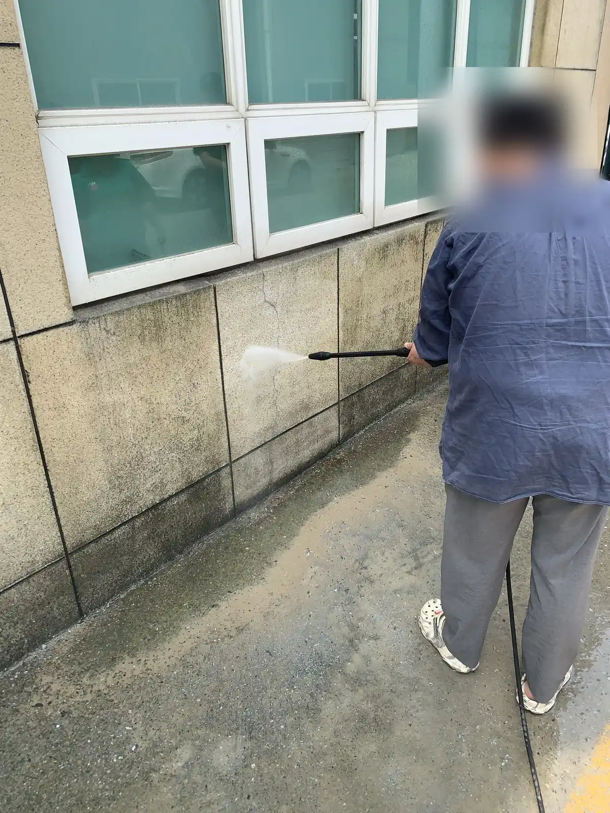

외벽에 검은 얼룩과 이끼가 번지기 시작했다면 — 방치하면 도장면이 부식되고 재도색 비용이 커집니다.
경상권 전역의 건물외벽청소를 직영으로 작업합니다. 고압세척 장비와 자일로프(산업로프) 고소작업 인력을 직접 보유해, 스카이차가 진입하지 못하는 건물도 층수 제한 없이 작업합니다. 외벽의 이끼 백태 녹물 매연 얼룩부터 아파트 거실 베란다의 바깥 창문까지 — 사진 3장이면 방문 없이 당일 견적을 받아보실 수 있습니다.
건물 앞 도로 폭과 층수로 결정됩니다. 진입 공간이 있으면 스카이차가 빠르고, 이면도로 고층 타워형 건물은 자일로프가 사실상 유일한 방법입니다. 사진을 보내주시면 현장에 맞는 방식과 비용을 비교해 안내합니다.
가능합니다. 동 단위로 일정을 나눠 진행하며, 관리사무소 입주자대표회의에 필요한 견적서와 세금계산서 발행을 지원합니다.
도장 상태를 사진으로 먼저 확인합니다. 박리가 심한 면은 수압을 낮추거나 구간을 제외해 손상을 막고, 필요하면 세척 후 재도색을 권해드립니다.
도로변 해안가 건물은 1~2년, 일반 상가 건물은 2~3년 주기가 보통입니다. 정기 계약 시 주기 관리와 비용 조정이 가능합니다.
우천 시 고소작업은 안전을 위해 연기하고 즉시 대체 일정을 협의합니다. 연기에 따른 추가 비용은 없습니다.